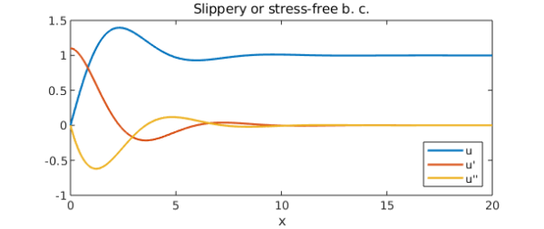
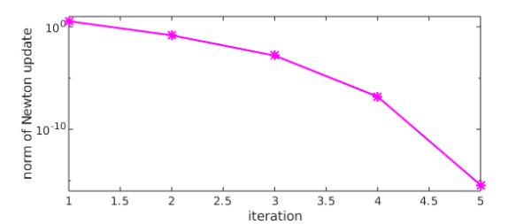
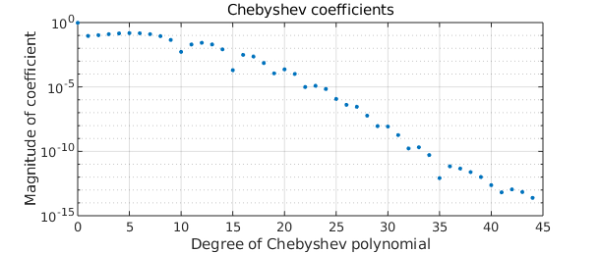

A one-layer model of the large-scale circulation in an ocean (the Gulf Stream) was proposed by Ierley and Ruehr in 1986 [1]: $$ u''' -\lambda((u')^2-uu'')-u+1=0, ~~u(0) =0, ~~x\in [0,\infty) $$ for some real $\lambda$. Boundary conditions are given as either $u(0)=u'(0)=0$ (rigid or no-slip) or $u(0)=u''(0)=0$ (slippery or stress-free). In both cases we require $u(\infty) = 1$.
In order to solve the problem in Chebfun we'll need to truncate the domain to something suitable, say $[0, X]$, i.e, to make use of the so-called domain truncation (see for instance our papers [3] and [4]).
An integral result for this problem is fairly useful. It reads $$ I = \int_{0}^{\infty }[(u'')^2 - 3\lambda uu'u'']dx=\frac{1}{2}, $$ and it is obtained multiplying the equation by $u'$, integrating by parts and enforcing the boundary conditions. This result is valid for both types of boundary conditions. Using this integral result we optimise the value of the length $X$ above, and find that the accuracy of the Chebfun result comes close to machine precision.
We can set up the chebop and solve the differential equation with only a few lines of code (see [2] for details).
tic X = 35; dom = [0, X]; lambda = -0.1; op = @(u) diff(u,3) - lambda*( diff(u,1)^2 - u*diff(u,2) ) - u + 1; lbc = @(u) [u; diff(u,2)]; % stress-free BC rbc = 1; N = chebop(op,dom,lbc,rbc); [u,info] = N\0;
Here is what the solution looks like.
plot([u diff(u) diff(u,2)])
axis([0 20 -1 1.5])
xlabel('x'), legend('u','u''','u''''','location','southeast')
title('Slippery or stress-free b. c.')

The residuals are small:
N_residual = norm(N(u)) % residual of diffl. eq.
lbcu = lbc(u);
lbc_residuals = [lbcu{1}(0) lbcu{2}(0)] % residuals of left BC
rbc_residual = u(end) - rbc % residual of right BC
N_residual =
4.580588942258870e-10
lbc_residuals =
1.0e-09 *
0.000033013148830 0.133907788023016
rbc_residual =
-9.769962616701378e-15
The Newton iteration has converged quadratically:
semilogy(info.normDelta,'m*-')
ylim([1e-16 1e+01])
xlabel('iteration')
ylabel('norm of Newton update')
%

The Chebyshev coefficients of the solution decrease rapidly:
plotcoeffs(u)

Finally, the integral $I$ comes out with a very small error:
I = sum(diff(u,2)^2 - 3*lambda*(u*diff(u)*diff(u,2))) I_error = abs(I-1/2)
I =
0.499999999999915
I_error =
8.482103908136196e-14
We solved the problem for several values of $X$ and found that the minimal error in $I$ occurs with $X\approx 35$.
total_time_for_this_example = toc
total_time_for_this_example = 3.629420000000000
References
-
G. R. Ierley and O. G. Ruehr, Analytic and numerical solutions of a nonlinear boundary-layer problem, Stud. Apl. Math. 75:1-36 (1986).
-
L. N. Trefethen, A. Birkisson, and T. A. Driscoll, Exploring ODEs, SIAM, 2018.
-
C. I. Gheorghiu, Pseudospectral solutions to some singular nonlinear BVPs, Numer. Algor. 68 (2015), 1-14, DOI: 10.1007/s11075-014-9834-z.
-
C. I. Gheorghiu, Spectral collocation solutions to systems of boundary layer type, Numer. Algor. 73 (2016), 1-14, DOI:10.1007/s11075-015-0083-6